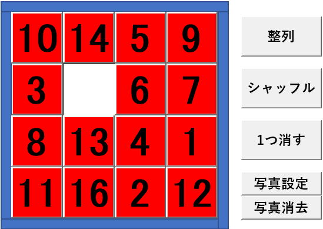

エクセルVBAで15パズルを作ってみた

古くからある15パズルをエクセルVBAで作ってみました。
エクセルでこのパズルを遊んでも決して面白いものではないですね。
このパズルそのものを使いたいという事はあまりないでしょう。
あくまで、エクセルVBAでボタンをドラッグ移動するような場合に、VBAの参考にしてもらえればと思います。
・コマンドボタンに画像を設定する
・コマンドボタンの画像を消去する
Excel 15パズルの動作
Excel囲碁の全VBAコード
シートモジュール
画像のPictureの設定時にオブジェクトを直接指定する都合があるので、
オブジェクト名を変えた場合は、標準モジュールの、
ButtonPicture
ButtonPictureDel
この2つのSheet1も変更してください。
Option Explicit
'ボタンに画像（フルパス指定）を設定します。
'画像ファイルを""にした場合は画像を消去します。
Public Property Let SetPicture(ByVal num As Long, ByVal argFile As String)
Select Case num
Case 1
Me.btn01.Picture = LoadPicture(argFile)
Me.btn01.BackColor = IIf(argFile = "", vbRed, vbWhite)
Case 2
Me.btn02.Picture = LoadPicture(argFile)
Me.btn02.BackColor = IIf(argFile = "", vbRed, vbWhite)
Case 3
Me.btn03.Picture = LoadPicture(argFile)
Me.btn03.BackColor = IIf(argFile = "", vbRed, vbWhite)
Case 4
Me.btn04.Picture = LoadPicture(argFile)
Me.btn04.BackColor = IIf(argFile = "", vbRed, vbWhite)
Case 5
Me.btn05.Picture = LoadPicture(argFile)
Me.btn05.BackColor = IIf(argFile = "", vbRed, vbWhite)
Case 6
Me.btn06.Picture = LoadPicture(argFile)
Me.btn06.BackColor = IIf(argFile = "", vbRed, vbWhite)
Case 7
Me.btn07.Picture = LoadPicture(argFile)
Me.btn07.BackColor = IIf(argFile = "", vbRed, vbWhite)
Case 8
Me.btn08.Picture = LoadPicture(argFile)
Me.btn08.BackColor = IIf(argFile = "", vbRed, vbWhite)
Case 9
Me.btn09.Picture = LoadPicture(argFile)
Me.btn09.BackColor = IIf(argFile = "", vbRed, vbWhite)
Case 10
Me.btn10.Picture = LoadPicture(argFile)
Me.btn10.BackColor = IIf(argFile = "", vbRed, vbWhite)
Case 11
Me.btn11.Picture = LoadPicture(argFile)
Me.btn11.BackColor = IIf(argFile = "", vbRed, vbWhite)
Case 12
Me.btn12.Picture = LoadPicture(argFile)
Me.btn12.BackColor = IIf(argFile = "", vbRed, vbWhite)
Case 13
Me.btn13.Picture = LoadPicture(argFile)
Me.btn13.BackColor = IIf(argFile = "", vbRed, vbWhite)
Case 14
Me.btn14.Picture = LoadPicture(argFile)
Me.btn14.BackColor = IIf(argFile = "", vbRed, vbWhite)
Case 15
Me.btn15.Picture = LoadPicture(argFile)
Me.btn15.BackColor = IIf(argFile = "", vbRed, vbWhite)
Case 16
Me.btn16.Picture = LoadPicture(argFile)
Me.btn16.BackColor = IIf(argFile = "", vbRed, vbWhite)
End Select
End Property
'MouseDownイベントの共通処理
Private Sub btn_MouseDown(ByVal argObj As Object)
StopMobe = False
Set ClickButton = argObj
Application.OnTime Now(), "MoveShape"
End Sub
'MouseUpイベントの共通処理
Private Sub btn_MouseUp()
StopMobe = True
End Sub
Private Sub btn01_MouseDown(ByVal Button As Integer, ByVal Shift As Integer, ByVal X As Single, ByVal Y As Single): Call btn_MouseDown(Me.btn01): End Sub
Private Sub btn02_MouseDown(ByVal Button As Integer, ByVal Shift As Integer, ByVal X As Single, ByVal Y As Single): Call btn_MouseDown(Me.btn02): End Sub
Private Sub btn03_MouseDown(ByVal Button As Integer, ByVal Shift As Integer, ByVal X As Single, ByVal Y As Single): Call btn_MouseDown(Me.btn03): End Sub
Private Sub btn04_MouseDown(ByVal Button As Integer, ByVal Shift As Integer, ByVal X As Single, ByVal Y As Single): Call btn_MouseDown(Me.btn04): End Sub
Private Sub btn05_MouseDown(ByVal Button As Integer, ByVal Shift As Integer, ByVal X As Single, ByVal Y As Single): Call btn_MouseDown(Me.btn05): End Sub
Private Sub btn06_MouseDown(ByVal Button As Integer, ByVal Shift As Integer, ByVal X As Single, ByVal Y As Single): Call btn_MouseDown(Me.btn06): End Sub
Private Sub btn07_MouseDown(ByVal Button As Integer, ByVal Shift As Integer, ByVal X As Single, ByVal Y As Single): Call btn_MouseDown(Me.btn07): End Sub
Private Sub btn08_MouseDown(ByVal Button As Integer, ByVal Shift As Integer, ByVal X As Single, ByVal Y As Single): Call btn_MouseDown(Me.btn08): End Sub
Private Sub btn09_MouseDown(ByVal Button As Integer, ByVal Shift As Integer, ByVal X As Single, ByVal Y As Single): Call btn_MouseDown(Me.btn09): End Sub
Private Sub btn10_MouseDown(ByVal Button As Integer, ByVal Shift As Integer, ByVal X As Single, ByVal Y As Single): Call btn_MouseDown(Me.btn10): End Sub
Private Sub btn11_MouseDown(ByVal Button As Integer, ByVal Shift As Integer, ByVal X As Single, ByVal Y As Single): Call btn_MouseDown(Me.btn11): End Sub
Private Sub btn12_MouseDown(ByVal Button As Integer, ByVal Shift As Integer, ByVal X As Single, ByVal Y As Single): Call btn_MouseDown(Me.btn12): End Sub
Private Sub btn13_MouseDown(ByVal Button As Integer, ByVal Shift As Integer, ByVal X As Single, ByVal Y As Single): Call btn_MouseDown(Me.btn13): End Sub
Private Sub btn14_MouseDown(ByVal Button As Integer, ByVal Shift As Integer, ByVal X As Single, ByVal Y As Single): Call btn_MouseDown(Me.btn14): End Sub
Private Sub btn15_MouseDown(ByVal Button As Integer, ByVal Shift As Integer, ByVal X As Single, ByVal Y As Single): Call btn_MouseDown(Me.btn15): End Sub
Private Sub btn16_MouseDown(ByVal Button As Integer, ByVal Shift As Integer, ByVal X As Single, ByVal Y As Single): Call btn_MouseDown(Me.btn16): End Sub
Private Sub btn01_MouseUp(ByVal Button As Integer, ByVal Shift As Integer, ByVal X As Single, ByVal Y As Single): Call btn_MouseUp: End Sub
Private Sub btn02_MouseUp(ByVal Button As Integer, ByVal Shift As Integer, ByVal X As Single, ByVal Y As Single): Call btn_MouseUp: End Sub
Private Sub btn03_MouseUp(ByVal Button As Integer, ByVal Shift As Integer, ByVal X As Single, ByVal Y As Single): Call btn_MouseUp: End Sub
Private Sub btn04_MouseUp(ByVal Button As Integer, ByVal Shift As Integer, ByVal X As Single, ByVal Y As Single): Call btn_MouseUp: End Sub
Private Sub btn05_MouseUp(ByVal Button As Integer, ByVal Shift As Integer, ByVal X As Single, ByVal Y As Single): Call btn_MouseUp: End Sub
Private Sub btn06_MouseUp(ByVal Button As Integer, ByVal Shift As Integer, ByVal X As Single, ByVal Y As Single): Call btn_MouseUp: End Sub
Private Sub btn07_MouseUp(ByVal Button As Integer, ByVal Shift As Integer, ByVal X As Single, ByVal Y As Single): Call btn_MouseUp: End Sub
Private Sub btn08_MouseUp(ByVal Button As Integer, ByVal Shift As Integer, ByVal X As Single, ByVal Y As Single): Call btn_MouseUp: End Sub
Private Sub btn09_MouseUp(ByVal Button As Integer, ByVal Shift As Integer, ByVal X As Single, ByVal Y As Single): Call btn_MouseUp: End Sub
Private Sub btn10_MouseUp(ByVal Button As Integer, ByVal Shift As Integer, ByVal X As Single, ByVal Y As Single): Call btn_MouseUp: End Sub
Private Sub btn11_MouseUp(ByVal Button As Integer, ByVal Shift As Integer, ByVal X As Single, ByVal Y As Single): Call btn_MouseUp: End Sub
Private Sub btn12_MouseUp(ByVal Button As Integer, ByVal Shift As Integer, ByVal X As Single, ByVal Y As Single): Call btn_MouseUp: End Sub
Private Sub btn13_MouseUp(ByVal Button As Integer, ByVal Shift As Integer, ByVal X As Single, ByVal Y As Single): Call btn_MouseUp: End Sub
Private Sub btn14_MouseUp(ByVal Button As Integer, ByVal Shift As Integer, ByVal X As Single, ByVal Y As Single): Call btn_MouseUp: End Sub
Private Sub btn15_MouseUp(ByVal Button As Integer, ByVal Shift As Integer, ByVal X As Single, ByVal Y As Single): Call btn_MouseUp: End Sub
Private Sub btn16_MouseUp(ByVal Button As Integer, ByVal Shift As Integer, ByVal X As Single, ByVal Y As Single): Call btn_MouseUp: End Sub
標準モジュール
Option Explicit
Declare PtrSafe Sub Sleep Lib "kernel32" (ByVal dwMilliseconds As Long)
'マウスカーソルの位置を取得するAPI
Public Declare PtrSafe Function GetCursorPos Lib "user32" (lpPoint As PointApi) As Long
Public Type PointApi
X As Long
Y As Long
End Type
'四隅の位置を設定する構造体
Public Type Rectangle
Top As Long
Botom As Long
Left As Long
Right As Long
End Type
'MouseDownでボタンを設定
Public ClickButton As Object
'MouseUpでTrueに設定して移動を停止
Public StopMobe As Boolean
'「整列」
Public Sub ButtonAlignment()
Dim ws As Worksheet
Set ws = ActiveSheet
Dim sp As Object, i As Long
Dim StartTop As Long, StartLeft As Long
StartTop = ws.Shapes("左枠").Top
StartLeft = ws.Shapes("左枠").Left + ws.Shapes("左枠").Width
For i = 1 To 16
Set sp = ws.Shapes("btn" & Format(i, "00"))
sp.Top = StartTop + (Int((i - 1) / 4) * sp.Height)
sp.Left = StartLeft + (Int((i - 1) Mod 4) * sp.Width)
Next
End Sub
'「シャッフル」
Public Sub ButtonShuffle()
Dim ws As Worksheet
Set ws = ActiveSheet
Dim inAry, outAry
inAry = Array(1, 2, 3, 4, 5, 6, 7, 8, 9, 10, 11, 12, 13, 14, 15)
Dim i As Long, rnd1 As Integer, rnd2 As Integer
Dim tmpTop As Long, tmpLeft As Long
Dim sp1 As Object, sp2 As Object
For i = 1 To 16
Randomize
rnd1 = Int(Rnd * 16 + 1)
rnd2 = Int(Rnd * 16 + 1)
Set sp1 = ws.Shapes("btn" & Format(rnd1, "00"))
Set sp2 = ws.Shapes("btn" & Format(rnd2, "00"))
tmpTop = sp1.Top: tmpLeft = sp1.Left
sp1.Top = sp2.Top: sp1.Left = sp2.Left
sp2.Top = tmpTop: sp2.Left = tmpLeft
Next
End Sub
'「1つ消す」
Public Sub ButtonTakeOne()
Dim ws As Worksheet
Set ws = ActiveSheet
Dim i As Long, sp As Object, btn As Object
Randomize
i = Int(Rnd * 16 + 1)
Set btn = ws.Shapes(Application.Caller)
Set sp = ws.Shapes("btn" & Format(i, "00"))
sp.Top = btn.Top
sp.Left = btn.Left + btn.Width + 10
End Sub
'「写真設定」
Public Sub ButtonPicture()
Dim vFile As Variant
vFile = Application.GetOpenFilename(FileFilter:="画像ファイル,*.*", MultiSelect:=True)
If Not IsArray(vFile) Then Exit Sub
Dim i As Long, j As Long
For i = LBound(vFile) To UBound(vFile)
j = j + 1
Sheet1.SetPicture(j) = vFile(i)
Next
End Sub
'「写真消去」
Public Sub ButtonPictureDel()
Dim i As Long
For i = 1 To 16
Sheet1.SetPicture(i) = ""
Next
End Sub
'ボタンをマウス位置で移動：MouseDownからOnTimeで呼ばれる
Public Sub MoveShape()
Dim ws As Worksheet
Set ws = ClickButton.Parent
ws.Unprotect
Dim p1 As PointApi
Dim p2 As PointApi
Dim rectObj As Rectangle
Dim objRange As Rectangle
GetCursorPos p1
p2 = p1
Do
If StopMobe Then
ws.Protect DrawingObjects:=True, Contents:=True, Scenarios:=True
Exit Sub
End If
rectObj = getRectangle(ClickButton) '四隅の位置
objRange = moveRange(ClickButton) '移動可能範囲
If Abs(p2.Y - p1.Y) > Abs(p2.X - p1.X) Then
If p2.Y < p1.Y Then
'上移動
If rectObj.Top + Y_pix2point(p2.Y - p1.Y) < objRange.Top Then
ClickButton.Top = objRange.Top
Else
ClickButton.Top = ClickButton.Top + Y_pix2point(p2.Y - p1.Y)
End If
ElseIf p2.Y > p1.Y Then
'下移動
If rectObj.Botom + Y_pix2point(p2.Y - p1.Y) > objRange.Botom Then
ClickButton.Top = objRange.Botom - ClickButton.Height
Else
ClickButton.Top = ClickButton.Top + Y_pix2point(p2.Y - p1.Y)
End If
End If
Else
If p2.X < p1.X Then
'左移動
If rectObj.Left + X_pix2point(p2.X - p1.X) < objRange.Left Then
ClickButton.Left = objRange.Left
Else
ClickButton.Left = ClickButton.Left + Y_pix2point(p2.X - p1.X)
End If
Else
'右移動
If rectObj.Right + X_pix2point(p2.X - p1.X) > objRange.Right Then
ClickButton.Left = objRange.Right - ClickButton.Width
Else
ClickButton.Left = ClickButton.Left + X_pix2point(p2.X - p1.X)
End If
End If
End If
p1 = p2
DoEvents
Application.ScreenUpdating = True
Application.Wait [Now()+"0:0:0.1"]
DoEvents
GetCursorPos p2
Loop
End Sub
'ボタンの移動可能範囲の四隅を返す
Private Function moveRange(argObj As Object) As Rectangle
Dim rectRtn As Rectangle
Dim rectObj As Rectangle
rectObj = getRectangle(argObj)
'微妙なずれを吸収する為に±5して小さくして判定する
rectObj.Top = rectObj.Top + 5
rectObj.Botom = rectObj.Botom - 5
rectObj.Left = rectObj.Left + 5
rectObj.Right = rectObj.Right - 8
Dim moveTop As Double: moveTop = -9999
Dim moveBotom As Double: moveBotom = 9999
Dim moveLeft As Double: moveLeft = -9999
Dim moveRight As Double: moveRight = 9999
Dim sp As Shape, rectSp As Rectangle
For Each sp In ActiveSheet.Shapes
If sp.Name <> argObj.Name Then
rectSp = getRectangle(sp)
If (rectSp.Left - 2 <= rectObj.Left And rectObj.Left <= rectSp.Right) Or _
(rectSp.Left - 2 <= rectObj.Right And rectObj.Right <= rectSp.Right) Then
'上の壁
If rectSp.Botom <= rectObj.Top Then
If moveTop < rectSp.Botom Then moveTop = rectSp.Botom
End If
'下の壁
If rectSp.Top >= rectObj.Botom Then
If moveBotom > rectSp.Top Then moveBotom = rectSp.Top
End If
End If
If (rectSp.Top < rectObj.Top And rectObj.Top <= rectSp.Botom) Or _
(rectSp.Top < rectObj.Botom And rectObj.Botom <= rectSp.Botom) Then
'左の壁
If rectSp.Right <= rectObj.Left Then
If moveLeft < rectSp.Right Then moveLeft = rectSp.Right
End If
'右の壁
If rectSp.Left >= rectObj.Right Then
If moveRight > rectSp.Left Then moveRight = rectSp.Left
End If
End If
End If
Next
moveRange.Top = moveTop
moveRange.Botom = moveBotom
moveRange.Left = moveLeft
moveRange.Right = moveRight
End Function
'図形の四隅を返す
Private Function getRectangle(argObj As Object) As Rectangle
getRectangle.Top = argObj.Top
getRectangle.Left = argObj.Left
getRectangle.Botom = argObj.Top + argObj.Height
getRectangle.Right = argObj.Left + argObj.Width
End Function
VBAとして難しい部分は、マウス位置とボタンの動きを連動させるところでしょうか。
他のボタンに当たらない範囲で動けるように制御しています。
これをあまり厳密にしてしまうと、マウス操作が出来なくなってしまいますし、緩すぎると重なったりしてしまいます。
私の環境下で調整した部分もありますので、動きがおかしい場合は調整してください。
また、ボタンの移動中の描画はPC性能もありますので、Wait時間等は適当に設定しました。
順番はダイアログで返される順番になりますので、ファイル名が順番になるように写真分割ファイルを用意してください。
ちなみに今回は、PhotoScapeを使用して16分割を作成しました。
Option Explicit
'参考にしたページ
'http://www.excel.studio-kazu.jp/kw/20151227182700.html
Declare PtrSafe Function GetDC Lib "User32.dll" _
(ByVal hWnd As Long) As Long
Declare PtrSafe Function ReleaseDC Lib "User32.dll" _
(ByVal hWnd As Long, ByVal hdc As Long) As Long
Declare PtrSafe Function GetDeviceCaps Lib "gdi32.dll" _
(ByVal hdc As Long, ByVal nIndex As Long) As Long
Function X_pix2point(px As Long) As Double
Dim DPI As Long
DPI = GetDpi(88) 'LOGPIXELSX
X_pix2point = Application.InchesToPoints(px) / DPI
End Function
Function Y_pix2point(px As Long) As Double
Dim DPI As Long
DPI = GetDpi(90) 'LOGPIXELSY
Y_pix2point = Application.InchesToPoints(px) / DPI
End Function
Private Function GetDpi(ByVal nFlag As Long) As Long
Dim hdc As Long
hdc = GetDC(Application.hWnd)
GetDpi = GetDeviceCaps(hdc, nFlag)
Call ReleaseDC(&H0, hdc)
End Function
Excel 15パズルのダウンロード
他のゲーム（数独、オセロ、将棋、囲碁）も含めたダウンロード一覧は以下になります。
同じテーマ「マクロVBAサンプル集」の記事
数独（ナンプレ）を解くVBAに挑戦№1
数独（ナンプレ）を解くアルゴリズムの要点とパフォーマンスの検証№1
ナンバーリンク(パズル)を解くVBAに挑戦№1
ナンバーリンクを解くVBAのパフォーマンス改善№1
オセロを作りながらマクロVBAを学ぼう
他ブックへのリンクエラーを探し解除
Excelシートの複雑な計算式を解析するVBA
Excel将棋：マクロVBAの学習用(№1)
Excel囲碁：万波奈穂先生に捧ぐ
Excel囲碁：再起動後も続けて打てるように改造
エクセルVBAで15パズルを作ってみた
新着記事NEW ・・・新着記事一覧を見る
VBA100本ノック 100本目：WEBから100本ノックのリストを取得｜VBA練習問題（3月3日）
VBA100本ノック 99本目：自動席替え（行列と前後左右が全て違うように）｜VBA練習問題（3月2日）
VBA100本ノック 98本目：席替えルールが守られているか確認｜VBA練習問題（3月1日）
VBA100本ノック 97本目：Accessデータを取得（グループ集計）｜VBA練習問題（2月27日）
VBA100本ノック 96本目：Accessデータを取得（マスタ結合&抽出）｜VBA練習問題（2月26日）
VBA100本ノック 95本目：図形のテキストを検索するフォーム作成｜VBA練習問題（2月24日）
VBA100本ノック 94本目：表範囲からHTMLのtableタグを作成｜VBA練習問題（2月23日）
VBA100本ノック 93本目：複数ブックを連結して再分割｜VBA練習問題（2月22日）
VBA100本ノック 92本目：セルの色を16進で返す関数｜VBA練習問題（2月20日）
VBA100本ノック 91本目：時間計算（残業時間の月間合計）｜VBA練習問題（2月19日）
アクセスランキング ・・・ ランキング一覧を見る
1.最終行の取得（End,Rows.Count）｜VBA入門
2.RangeとCellsの使い方｜VBA入門
3.変数宣言のDimとデータ型｜VBA入門
4.マクロって何？VBAって何？｜VBA入門
5.Range以外の指定方法（Cells,Rows,Columns）｜VBA入門
6.セルのコピー&値の貼り付け（PasteSpecial）｜VBA入門
7.繰り返し処理（For Next)｜VBA入門
8.セルに文字を入れるとは（Range,Value）｜VBA入門
9.マクロはどこに書くの（VBEの起動）｜VBA入門
10.とにかく書いてみよう（Sub,End Sub）｜VBA入門
- ホーム
- マクロVBA応用編
- マクロVBAサンプル集
- エクセルVBAで15パズルを作ってみた
このサイトがお役に立ちましたら「シェア」「Bookmark」をお願いいたします。
記述には細心の注意をしたつもりですが、
間違いやご指摘がありましたら、「お問い合わせ」からお知らせいただけると幸いです。
掲載のVBAコードは動作を保証するものではなく、あくまでVBA学習のサンプルとして掲載しています。
掲載のVBAコードは自己責任でご使用ください。万一データ破損等の損害が発生しても責任は負いません。